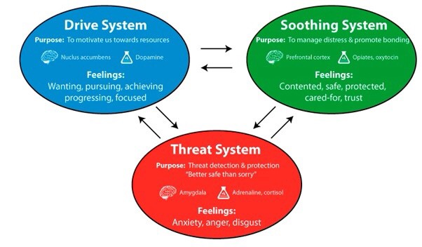

For the last few months, I've been working off a varying series of to-do lists to drive my life. I use a mix of the Things app, my bullet journal, and a calendar. Basically, my setup is to have annual Smart Goals, broken down into achievable chunks, then broken down into tasks to knock off todo lists. On the face of it, it's a way to organise a wiggly world.
And what is a wiggly world? Alan Watts describes it best:
This world is a great wiggly affair. Clouds are wiggly, waters are wiggly, plants are wiggly, mountains are wiggly, people are wiggly. But people are always trying to straighten things out.
Todo lists are essentially another attempt to make wiggly things straight and processable. There's the addictive high of knocking another task off a list, then spending no time actually appreciating what you've accomplished. After you spend months achieving something important, how long does the joy you obtain from completing the activity last? From my experience, maybe a few hours. Essentially the to-do lists can become is just a list of unfulfilled craving with no real end-point in sight.
Drive is important. From the theory behind Compassion Focused Therapy(CFT), your mind is broken down into three elements of emotional regulation. Drive, Threat and Soothing. All three are essential to living a happy, productive, flourishing life, but issues arise when the balance is skewed one way or another and this is where my concern with todo lists comes in.

External threats like losing your job can be helpful so you don't slack off each day at work. There is a functional value to threats like this. However, I'm beginning to think that todo lists are engaging threat into a pit of sorts. In the act of creating a to-do list, your converting your Drive behavior into a sort of Threat based motivation. I feel Drive, so I make these todos, I am then threatening myself into an unfulfilled existence if I don't act on this external list. If balanced, this can work relatively well.
The problems arise when there's too much Drive forcing far too much Threat for you to handle. Our hunter-gatherer ancestors probably found it relatively easy to keep a balanced Drive -> Threat system, where we only kept in our heads a few goals to further enhance our status or gain a mate etc. Think of it like a physical attack, if you have one or two threats, you can make a reasonable estimation and attack/flee accordingly, when you're surrounded by a dozen or so, screw it, you might as well just lie on the ground and let it happen.
For now, I'm just going try to create a few aims(maybe three or so) each morning and work out, if I'm any more or less productive than I was before or after. No long todo lists, no more guilt over unfulfilled goals. I'm going to look at what my wiggly mind wants to do at each instant, rather than crowbarring in what my driven straight-lined-self wanted me to do a few weeks ago.